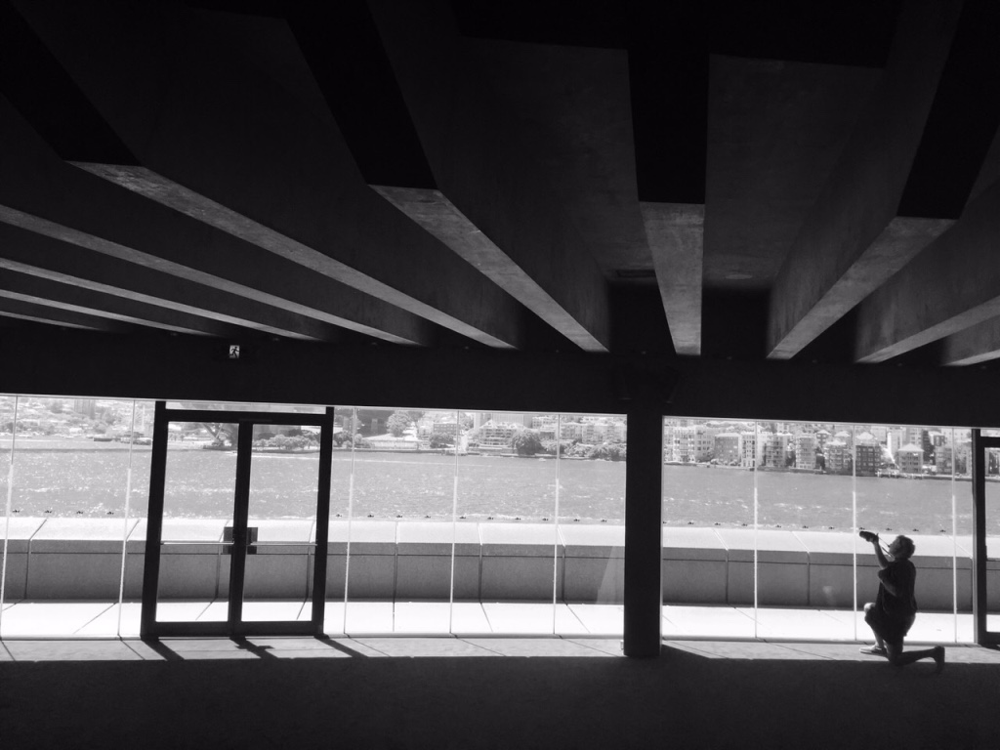

Yixin Hu
Pixel Lab
Tencent America

About Me
Yixin Hu
I'm currently a Senior Graphics Researcher at Pixel Lab, Tencent America. I obtained my doctoral degree from Courant Institute of Mathematical Sciences, New York University where I joined Geometric Computing Lab and started working with professor Daniele Panozzo. Before that, I got my Bachelor's degree in Computer Science at Zhejiang University, China, in 2016.
My research interests are Computer Graphics and Geometry Processing. My current research direction is triangular/tetrahedral meshing and its application, e.g. FEM-based physical simulation. I would love to explore more applications of triangle meshes and tetrahedral meshes.
My research has been recognized by Adobe Research Fellowship (2019), Jacob T. Schwartz Ph.D. Fellowship (2019), Sandra Bleistein Prize (2021), and Janet Fabri Prize (2022).
Here is my CV.
(My Chinese name is 胡译心. The closest pronunciation of my name in English is /ee-shin/ /hu:/.)
Publications
 |
 |
Work Experience
Tencent America, New York
Full-time Senior Graphics Researcher
Facebook Inc., Redmond (remote)
Research internship at FRL, Facebook, working with Yujia Chen and Michael Goesele.
Adobe Inc., San Fancisco
Research internship at Creative Intelligence Lab, Adobe, working with Qingnan Zhou.
nTopology Inc., New York
Internship at nTopology.
The University of Hong Kong, Hong Kong
Research internship at Computer Science Department of HKU and was supervised by professor Wenping Wang. My research topic is Computing the Boundary Surface of Medial Meshes.
News
I have been awarded the Janet Fabri Prize for an outstanding dissertation in Computer Science in 2022! I'm deeply grateful for this honor.
09/07/2021
I successfully defended my PhD dissertation. Thanks for everyone who helped me during my PhD study!
04/30/2021
I have been awarded Sandra Bleistein Prize 2021! I'm deeply grateful for this honor.
04/30/2021
I have one paper accepted for SIGGRAPH 2021!
05/05/2020
I have two papers accepted for SIGGRAPH 2020!
12/20/2019
I will have an internship at Facebook (Redmond) in summer 2020!
09/11/2019
I've been awarded the IMR travel award of IMR 2019 in Buffalo!
04/24/2019
My paper "TriWild: Robust Triangulation with Curve Constraints" has been accepted for SIGGRAPH 2019!
04/22/2019
I've been selected as 2019 Jacob T. Schwartz Ph.D. Fellow! I'm deeply grateful for this honor.
04/22/2019
I will have an internship at Creative Technologies Lab of Adobe this summer!
11/20/2018
I've been awarded Adobe Research Fellowship for 2019! I'm deeply grateful for this honor.
08/11/2018
My paper "Decoupling Simulation Accuracy from Mesh Quality" has been conditionally accepted for SIGGRAPH Asia 2018!
03/26/2018
My paper "Tetrahedral Meshing in the Wild" has been conditionally accepted for SIGGRAPH 2018!
03/19/2018
I will have an internship at nTopology this summer!
03/23/2017
I will have an internship at Creative Technologies Lab of Adobe this summer!
03/23/2017
My homepage is built today!
More about me
Temple @ Nagoya, Japan
17 Miles @ California, USA
 Sydney Opera House @ Sydney, Australia
Merlion Sunrise @ Singapore
Manhatten Sunset @ New York, USA
Antelope Canyon @ Arizona, USA